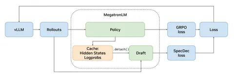

Самая времязатратная часть в GRPO — это генерация траекторий модели, на которую приходится около 72% всего процесса. Поэтому хочется ускорить генерацию роллаутов — и в сегодняшней статье NVIDIA рассказано, как это можно сделать.
По большому счёту, генерация роллаутов — это обычный инференс модели. При наивном инференсе видеокарты используются не на полную. Помочь решить эту проблему способен спекулятивный декодинг. Его суть заключается в том, что маленькая драфт-модель, учится предсказывать, какие токены сгенерирует основная модель. Последней остаётся лишь верифицировать, правильную ли гипотезу выдала драфт-модель. В режиме спекулятивного декодинга разрыв между компьютом и трансфером памяти сокращается.
Авторы проверяли свою гипотезу на небольшой модели — Qwen3-8B. Обучали её на математическом датасете DAPO-Math-17K, а валидировали — на AIME-2024. При этом других наборов данных не использовали, что немного подозрительно. Возможно, именно из-за такого выбора сетапа получились хорошие результаты. Кроме того, замеры проводили на Qwen3-235B, но в симуляции, из-за чего полученные результаты могут отличаться от реальных.
Модель обучали в двух режимах. Первый, RL-Think, предполагает простое обучение после SFT (или продолжение RL-стадии поверх уже ризонящей модели), а второй, RL-Zero, — RL сразу поверх претрейн-модели. Во втором случае спекулятивные модели вроде EAGLE дают лучший acceptance.
Касательно самого предсказания: авторы пришли к выводу, что наибольшее ускорение получается при трёх спекулируемых токенах. Интересно, что при предсказании уже пяти токенов генерация, напротив, замедляется.
В RL-Zero ускорение генерации — 1,77x против 1,54x в RL-Think: драфтеру проще предсказывать распределение менее обученной политики. На общем времени GRPO-шага разрыв уменьшается, потому что спекулятивный декодинг ускоряет только генерацию, а пересчёт log-prob и шаг оптимизатора занимают примерно то же время, что и без него. В симуляции с Qwen3-235B ускорение составило 2,5х. Но, опять же, в реальных рабочих сценариях прирост может быть скромнее.
В дополнение авторы предлагают доучивать драфт-модель во время GRPO, чтобы она не отставала от меняющейся политики основной модели. Делается это так: берутся скрытые представления основной модели, на них навешивается
.detach() , после чего они отправляются в драфтер. Такая система позволяет обучать драфтера вместе с основной моделью, не оказывая на неё влияния (схема на приложенном изображении). Разбор подготовил
Душный NLP
